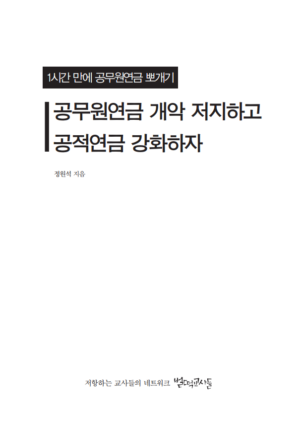

1시간 만에 공무원연금 뽀개기공무원연금 개악 저지하고
공적연금 강화하자
- 지은이: 정원석
- 펴낸곳: 저항하는 교사들의 네트워크 <벌떡교사들>
- 주소: 서울특별시 종로구 교북동 11-1 부귀빌딩 6층
- 전화: 02-737-0528
- 이메일: ruteachers@hanmail.net
※ 지은이 정원석은 전교조 경기지부 수원중등지회장이자 <벌떡교사들> 편집팀의 일원이다. 이 글은 그동안 필자가 <벌떡교사들>과 <노동자 연대>에 기고한 기사들과 전교조 지회들에서 발표한 연설문 등을 종합해 이해하기 쉽게 정리한 것이다.
목차